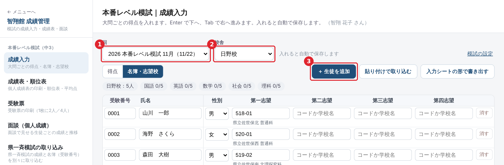
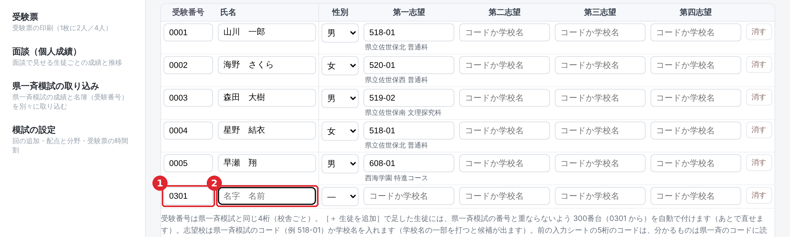
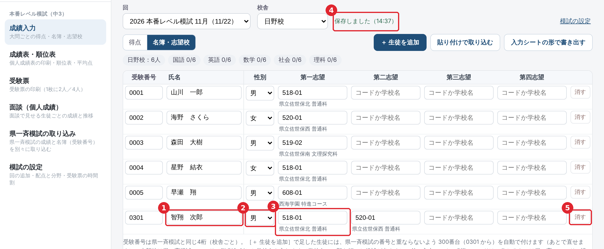
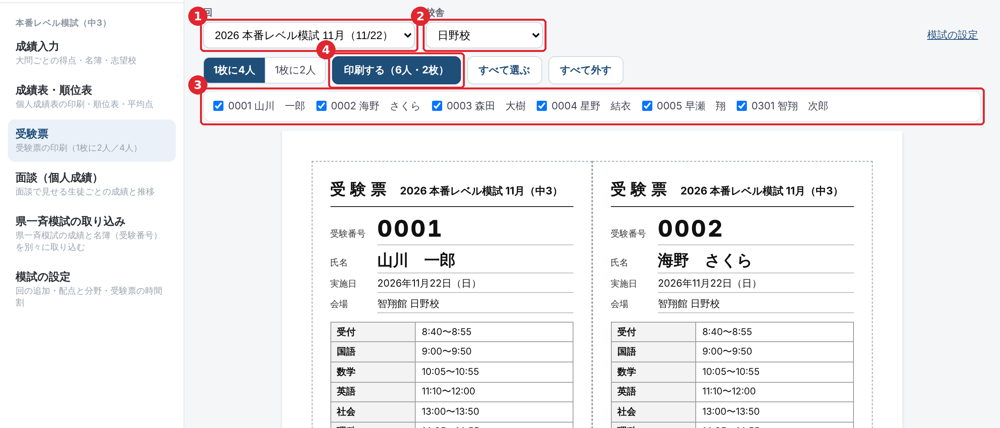

株式会社智翔館 社内向け
成績管理
生徒の追加 マニュアル
受験票を作るために、成績管理（本番レベル模試）の名簿に生徒を足す方法をまとめています。使うのは、成績入力の画面の［＋ 生徒を追加］です。受験番号は自動で付きます。県一斉模試を受けた生徒は、管理部門が名簿に入れます。
- 対象
- 成績管理を使う職員（総務・人事・支援・管理、小中等部の職員）
- アプリ
- 智翔館アプリ「成績管理」（2026年11月の画面）
- 最新版
- 智翔館アプリのヘルプデスク「マニュアル」タブからダウンロードできます
- 作成
- 2026年11月
※ 写真に写っている生徒・職員の氏名は、説明のために用意した架空の例です。
| 生徒 | 受験番号 | 足し方 |
|---|
| 県一斉模試を受けた生徒 | 県一斉模試の番号（0001 から。校舎ごと） | 管理部門が、県一斉模試の番号で名簿に入れます（この手順の作業は要りません） |
県一斉模試を受けていない生徒
（あとから入った生徒など） | 0301 から自動（300番台。校舎ごと） | ［＋ 生徒を追加］で1人ずつ足す（第2章） |
- 受験番号は4桁で、校舎ごとに付きます。校舎がちがえば、同じ番号の生徒がいてもかまいません。
- ［＋ 生徒を追加］で付く 300番台の番号は、県一斉模試の番号と重ならないようにするためのものです。あとから直すこともできます。
- 成績管理は、智翔館アプリの総合メニューの成績管理のカードから開きます。
2-1成績入力の画面を開く

図2 成績入力の画面
- 1
回 生徒を足す模試の回を選びます（例：2026 本番レベル模試 11月）。
- 2
校舎 生徒の校舎を選びます。名簿は校舎ごとなので、まちがえないようにしてください。
- 3
＋ 生徒を追加 押すと、名簿のいちばん下に新しい行ができます。
2-2生徒を足して、氏名・性別・志望校を入れる
＋ 生徒を追加を押します。表示が「名簿・志望校」に切り替わり、いちばん下に新しい行ができます。受験番号には 0301（2人目からは 0302、0303 …）が自動で入り、氏名の欄に文字を打てる状態になります。
氏名を入れます。名字と名前のあいだは空白を1つ入れてください（全角の空白にそろえます）。
性別を選びます。
志望校は、分かれば入れてください（あとから入れてもかまいません）。県一斉模試の学校コード（例 518-01）か、学校名の一部（例「佐世保北」）を打つと候補が出ます。コードを入れると、欄の下に学校名が出ます。第一〜第四志望まで入れられます。
上に「保存しました（時刻）」と出れば完了です。

図3 ［＋ 生徒を追加］を押した直後。受験番号 0301 の行ができ1、氏名の欄2に文字を打てます

図4 氏名・性別・志望校を入れたところ
- 1
氏名 名字と名前のあいだに空白を1つ。
- 2
性別 男・女を選びます。
- 3
志望校 コードか学校名。欄の下に学校名が出ているか確かめます。
- 4
保存の状態 「保存しました」と時刻が出れば保存されています。「保存できませんでした」と出たら、その横のもう一度保存を押します。
- 5
消す まちがえて足した行を消します（第4章）。
ポイント
Enter で下の行、Tab で右の欄に進めます。何人も続けて足すときは、＋ 生徒を追加を押すたびに次の番号（0302、0303 …）の行ができます。得点は、表示を「得点」に切り替えて入れます。

図5 受験票の画面
- 1
回 受験票を作る模試の回を選びます。
- 2
校舎 校舎を選ぶと、その校舎の名簿の生徒が並びます。
- 3
生徒の一覧 印刷する生徒にチェックを入れます（はじめは全員にチェックが入っています）。足した生徒だけを印刷するときは、すべて外すを押してから、その生徒にチェックを入れます。
- 4
印刷する A4 に4人分（または2人分）ずつ、切り取り線つきで印刷します。「1枚に4人」「1枚に2人」で選べます。
ポイント
時間割・持ち物・注意事項・会場は「模試の設定」の内容が入ります。入っていない項目があると、画面の上に知らせが出ます（空欄のまま印刷されます）。
| こんなとき | どうすればよいか |
|---|
| 受験番号を直したい | 「名簿・志望校」の表示で、受験番号の欄を直します（数字4桁。打つと自動で保存）。県一斉模試を受けた生徒は、管理部門が県一斉模試の番号で名簿に入れます（そのとき、同じ氏名の生徒の番号は県一斉模試の番号に直ります）。 |
| 校舎をまちがえて足した | その行の消すで消し、正しい校舎を選び直してから、＋ 生徒を追加で足し直します（得点を入れていた場合は、入れ直しになります）。 |
| 同じ生徒を2回足した・いらない行がある | いらない行の消すを押し、確認で「OK」を押します。消すと、その行の得点も見えなくなります。まちがえて消したときは、管理者に連絡してください（元に戻せます）。 |
| 志望校の下に「一覧に無いコード」「前のコード」と出る | 県一斉模試の学校コードと合っていません。学校名の一部を打って、候補から選び直してください。 |
| 「保存できませんでした」と出る | 横のもう一度保存を押します。何度も出るときは、ページを読み込み直してから入れ直し、管理者に連絡してください。 |
| 「成績管理の保存先…が未設定です」と出る | 保存先の設定がまだです。管理者に連絡してください。 |
ご不明な点や不具合は、ヘルプデスクの「ご意見・不具合の報告」からお知らせください。